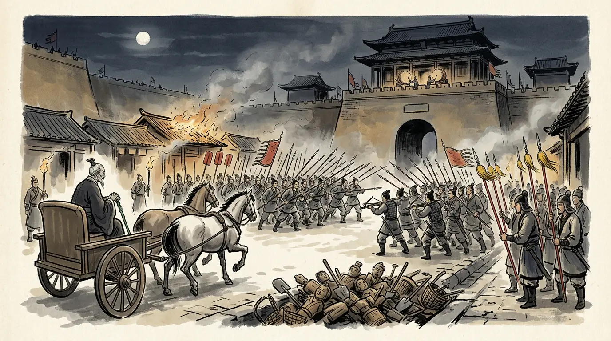
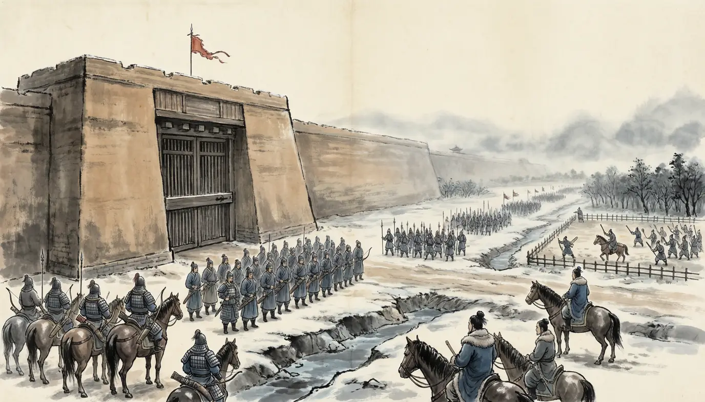
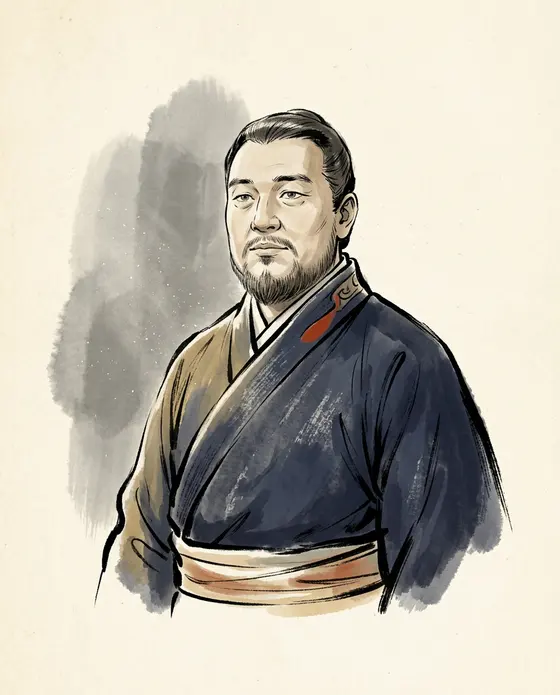
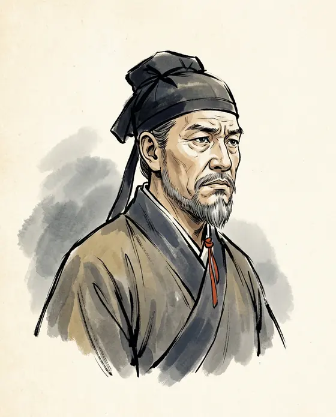
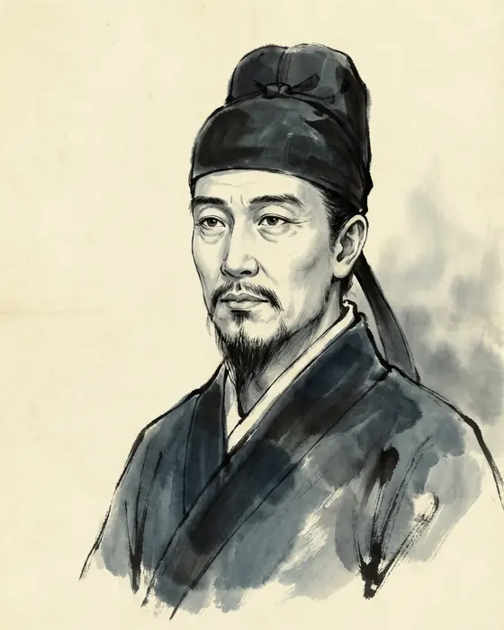
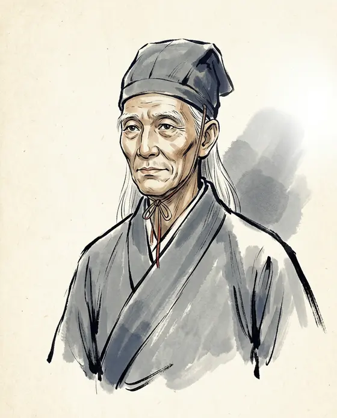

156–87 BCE
In his fifty-first year of fifty-four on the throne when the digging began. He ordered the search, fought his own heir in the streets with a letter about ox-carts, and spent his last four years unbuilding his wars.

![Panel 01: In the first month of 91 BCE the chancellor of the Han empire died in a prison cell. In the intercalary seventh month two princesses who were the emperor's daughters were executed for figures buried in the ground. In the seventh month the emperor's own seat was lifted off its floor, and the crown prince cut down the officer who had dug in his courtyard and held Chang'an for five days. In the eighth month the prince was found hanged in a storehouse two hundred li east of the walls. He was outlived by four years, which the emperor spent pulling his own reign apart.](../../../panels/han07/00-cover.webp)



![Panel 05: The emperor went up to Ganquan away from the heat of the plain and lay ill there, and the man out of office came to him with a diagnosis: the sickness was a curse, a curse meant figures in the ground, and figures in the ground could be dug out. He was given the cases to try, and went through the palaces with a shaman of the northern peoples reading the ground, arresting anyone who sacrificed in the night, heating iron clamps in the fire and laying them on men until they confessed what they were told.](../../../panels/han07/05-what-jiang-chong-reported.webp)

![Panel 07: The men taken in the searching were tried by the officer who had accused them, on always the same charge, and that charge brought in a man's family with him. Nobody carried anyone else's case up to a court. Years afterwards the emperor wrote to his ministers about the affair he had ordered, and the letter is in the book: he had commanded the chancellor and the censors to drive the officers of two thousand shi into making arrests, and the Commandant of Justice to try the cases — and he had never heard that the Nine Ministers or the Commandant of Justice had held one proper trial.](../../../panels/han07/07-the-machine.webp)
![Panel 08: At its height the house of Wei held five marquisates: the grand general who took the Ordos, his three sons still in swaddling clothes, his sister's son the Swift Champion, and a fifth in the collateral line. His son Wei Kang, the Marquis of Changping, had lost a marquisate of his own once on a charge and had then inherited his father's; he died in the intercalary month of 91 BCE with the two princesses. Twenty-four years, says the general's own biography, and all five marquisates were gone.](../../../panels/han07/08-the-house-of-the-general.webp)
![Panel 09: Wei Zifu came to the emperor out of the household of the Princess of Pingyang, where she had been a singing girl, and after more than a year without a visit she was swept out among the unusable palace women and had to cry in front of him to be taken back. She bore three daughters, then a son, and was made empress in 128 BCE; her son was made heir at seven. Her favour faded, and the women who came after her are named in her entry one after another. She held the seal thirty-eight years. In the eighth month of 91 BCE an officer of the imperial clan and the commandant of the garrison came with a document demanding her seal and ribbon, and she killed herself.](../../../panels/han07/09-thirty-eight-years.webp)
![Panel 10: Liu Ju had been heir for thirty-one years. He was set the Spring and Autumn in the Gongyang reading and then took the rival Guliang reading from an old teacher, and when he came of age his father built him the Bowang gardens and let him draw guests, at which the book's comment is that most of what came to him came in odd ways. When the digging reached his courtyard, his father lay ill at Ganquan, and neither the empress nor the officers of the eastern palace could get an answer back. His Junior Tutor Shi De was afraid the tutors would be executed with the prince.](../../../panels/han07/10-effigies-in-the-eastern-palace.webp)
![Panel 11: On the renwu day of the seventh month the prince sent men out posing as imperial envoys, with a staff, to arrest the commissioner and his assistants. The marquis who had been sent to help with the digging doubted the staff and would not take the order, and was cut down in the struggle. The censor got out with a wound and reached Ganquan. The prince went to the execution himself and struck off Jiang Chong's head, and the shaman of the northern peoples was roasted alive in the imperial park.](../../../panels/han07/11-the-princes-own-hand.webp)
![Panel 12: A retainer of the prince carried a staff through the Changqiu gate of the Weiyang Palace at night and had the empress told by one of her senior women; the middle stable sent out its cars loaded with crossbow men, the arsenal was opened, and the prisons of the capital offices were emptied and their convicts given weapons. A prisoner riding with the prince's staff to call in the cavalry of the northern camps was run down and beheaded, and the horsemen were told the staff was false. The emperor came down from Ganquan, took the Jianzhang Palace west of the city, and wrote to his chancellor: make your ramparts of ox-carts, do not close with short weapons, kill and wound in numbers. Both sides drew men out of the markets, and fought five days under the gate-towers of the Changle Palace. Tens of thousands died, and the blood ran into the drains.](../../../panels/han07/12-five-days.webp)
![Panel 13: The prince went out south by the Fu'ang gate and east, and hid in a ward called Quanjiu in the county of Hu, more than two hundred li from the walls, with two of his grandsons. His host was poor and sold the shoes he wove to keep him fed. The prince heard that an acquaintance of old days was living well in the same county and sent for him, and the man came and gave the place away. Officers surrounded the storehouse. Judging that he could not get out, the prince barred the door of the inner room against them and hanged himself from the beam. The host died fighting in the doorway and the two grandsons died in the room with him.](../../../panels/han07/13-the-storehouse-at-hu.webp)
![Panel 14: The imperial great-grandson, born to the crown prince's grandson by his wife of the Wang, was some months old when he was locked up in the prison of the commandery residences at Chang'an under his grandfather's case. The officer ordered to work the witchcraft cases there pitied him and knew in his heart that the prince's business had nothing in it; he chose careful convict women to nurse the child, put him somewhere dry, and paid for his food and clothes out of his own purse. Years later a palace officer came to that gate at night with orders to kill the prisoners of the capital, heavy cases and light alike, and the gate was not opened to him.](../../../panels/han07/14-the-child-in-the-gaol.webp)
![Panel 15: The chancellor who won the five days was Liu Quli, a son of the emperor's half-brother the Prince Jing of Zhongshan, made chancellor in the spring of 91 BCE with twenty-two hundred households, in the year the chancellorship was divided and a second chancellery created. Eleven months later his wife was accused of sacrificing at the soil-altar and cursing the emperor, along with the general commanding the army out in the steppe, for the sake of a rival prince. He was paraded through the town in a provision cart and cut in two in the eastern market, and his wife and children's heads were displayed on the Huayang street. That general heard that his own family had been arrested, and did not come home.](../../../panels/han07/15-the-second-chancellor.webp)
![Panel 16: Some while after the prince's death an officer of the tomb-park of the high temple, a man of over eight feet with a good presence, sent up an urgent memorial about the duty that binds a father to a son. He was made Grand Herald on the spot and chancellor within months, the one minister in this book to take the seal out of a sentence. The reversal he asked for is recorded in one clause of the prince's biography, item by item: most of the witchcraft cases were found not to have been real; the emperor knew the prince had acted out of terror; the family of Jiang Chong was wiped out; the inner attendant who had helped him was burnt on the Heng bridge. An elder of a town in Huguan county had written first, and his letter is in the book too.](../../../panels/han07/16-the-white-haired-man.webp)
![Panel 17: The empire had been at war since the year the prince was born, and the book's count is thirty-two years of marching and an exhausted realm; the prince's chapter says thirty. The roads carried the cost. Grain went out to the north-west and did not come back; when a hard-won victory in the far west was followed by the march home, thousands died of hunger on the road, and the emperor said so afterwards. In 90 BCE an army went out three ways and one of its generals, hearing that his wife and children were under arrest at Chang'an, handed his force to the enemy. Then, in 89 BCE, the emperor's Commandant for Grain, with the chancellor and the censor-in-chief, asked him to confirm what the garrisons had begun to assume: colonist-soldiers at old Luntai, where five hundred thousand qing of irrigated field may be had; three commandants to guard the work in sections; and beacon-towers built on westward, to overawe the western states and back the Wusun.](../../../panels/han07/17-what-the-roads-cost.webp)
![Panel 18: The answer came back as an edict, and it refused. An officer had asked for a levy of thirty cash a head to help the frontier: the emperor said that would press the old, the weak, the fatherless and the widow harder than anyone, and it was dropped. He named the general he had chosen by divination and said the divination had lied, and that the grief for the men who died and were scattered was always in his heart. What was to be done instead was a list an accountant could check: forbid harsh and violent exactions, stop impositions laid on without authority, throw the whole strength into farming, and repair the rule remitting the horse-corvee so that the garrisons may fill up. No army went out again. The chancellor was enfeoffed with a title that stated the policy.](../../../panels/han07/18-the-luntai-edict.webp)
A frightened empress dowager, an official who made his career out of what he dug up, a crown prince who fought in the streets of the capital, and an emperor who read the report afterwards.






The Ming romances of the Han dynasties, the stage plays drawn from them and the serials drawn from those are entertainment — and not a source. Where their famous scenes depart from the histories, we leave them out of the story and put them here.
The witchcraft cases of 91 BCE were a panic: a superstitious old emperor frightened of sorcery, and conjurers and women running wild through the capital.
It was a legal machine and every part of it is named: a commission, a specialist who read the ground, assistants drawn from the imperial staff, torture licensed to produce confessions, and a standing capital charge that brought in a man's family with him. The search ran in a stated order — the concubines who hoped for the emperor's visits, then the empress's chambers, then the eastern palace, with the emperor's own seat lifted off its floor. The emperor admitted afterwards, in a letter kept in a chancellor's biography, that neither the Nine Ministers nor the Commandant of Justice had ever properly tried anyone. Fear supplied the accusations; the procedure supplied the deaths.
Emperor Wu killed his own son.
The son killed himself: he barred the door of the inner room at the storehouse in Hu and hanged when the officers had the place surrounded. His father wrote the sealed letter that told his chancellor to fight him in the streets with orders to kill and wound in numbers, which is the most damning thing in the episode and not the killing; and he afterwards rewarded the two men who broke in and then destroyed them, wiped out the Jiang kindred, had the eunuch who worked with Jiang Chong burnt on a bridge, and built a palace and a terrace at Hu for thinking of him. The dynasty never treated the prince as a criminal: his grandson came out of a gaol, took the throne, and rebuilt and endowed his tomb.
The Luntai edict of 89 BCE is where expansion ended: the emperor repented, the west was given up, and the empire turned inward.
The edict refused one proposal — a fresh extension of garrison-farming and beacon-towers further west, on a road the emperor said had starved thousands on the march home even after a victory — and it refused it in fiscal language, with instructions about exactions, farming and the horse-corvee. Nothing already held was given up: Luntai was farmed again within a few years under the officer who had asked for it, and the protectorate over the western regions was established in 60 BCE and held for the rest of the dynasty. Ban Gu's one-line summary, that from that time no army went out again, is about the emperor's remaining years, not about the empire's map.
The fall of the Wei house is a harem story: a neglected empress, a witch in the women's apartments, and the great general's graves dug up out of spite.
The grave-digging is not in the histories. The general's own biography, which records his marriage to the emperor's sister and the shape of his mound, says only that the five Wei marquisates were stripped within twenty-four years and that the house was destroyed when the crown prince failed; the searching did reach the empress's quarters and her nephew died under the charge, which was enough. Her own entry names no witch at all: thirty-eight years as empress, the rise of rival consorts, the commission, the demand for her seal, her suicide and a small coffin in a storeroom. The spirits and the love that curdled come from the palace story-books, Miscellaneous Records of the Western Capital and Stories of Emperor Wu of Han, which are much later than Ban Gu.
The speeches and wonders in the mirror of history — the emperor's dream of wooden men, the prince's wish to go and explain himself, the confession by the sea — are independent traditions filling gaps the Book of the Han left.
They are Sima Guang's workshop, cutting these same chapters into a dated line eleven centuries later and here and there taking in a detail Ban Gu left out or never carried. That is why those three items, and the search that sweeps from the capital commanderies across the whole empire, are marked in the notes as the relay's and are never used as fact. The rule runs the other way too: where the mirror and Ban Gu differ, it is usually Ban Gu's own chapters differing with each other — over whether the years of marching are thirty or thirty-two, and over whether the emperor's death and his heir's appointment fall a day apart or two.
Every caption and quotation in this episode traces to one of these. Where scholars disagree, the panel says so.
The capital buried its dead, the war went on for two more years, and then a request to plant a garrison at the western edge forced the court to answer for all of it: Episode 8 · Dead Beyond Ten Thousand Li (Chang'an and the Steppe, 53–33 BCE). The edict was the reply; the steppe answered it in person a generation later. Or back to the Han line, or meet the cast.